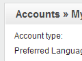

Getting Started with ApPHP MicroCMS (for version 3.0.0 or above)
-
1. General and Site Settings.
- 1.1 Setting up site parameters.
- 1.2 Banning Emails/IP Addresses.
- 1.3 Countries Management.
- 1.4 Site Preview.
- 2.1 My Account.
- 2.2 Statistics.
- 2.3 Roles & Privileges.
- 2.4 Admins Management.
- 2.5 Users Management.
- 4.1 Editing Homepage.
- 4.2 Creating new pages.
- 4.3 Editing pages.
- 4.4 Editing system pages.
- 4.5 Remove/Restore pages.
- 6.1 Email Templates.
- 6.2 Mass Mail.
- 7.1 Modules Management.
- 7.2 Users Module.
- 7.3 Contact Us Module.
- 7.4 Comments Module.
- 7.5 Gallery Module.
- 7.6 Banners Module.
- 7.7 News Module.
- 7.8 FAQ Module.
- 7.9 Backup & Restore Module.
1. General and Site Settings.
This section describes how to manage the general settings of your site.
[top]
1.1 Setting up site parameters.

Select Settings from General Menu. On this you can easy change/manage the important parameters of your site. You will see there 6 Tabs: General Settings, Visual Settings, Templates & Styles, Server Info, Site Info and Cron Jobs
On General Settings Tab you can change:
- Site Offline
- Offline Message
- SEO URLs
- WYSIWYG Editor
- RSS Feed Type
- Caching / Caching lifetime - caching for pages
On Visual Settings Tab you can change: (change value in dropdown box to make changes for appropriate language). You may also apply changes in META tags to all pages.
- Header Text
- Slogan
- Footer Text
- Tag <TITLE>
- Meta Tag <KEYWORDS>
- Meta <DESCRIPTION>
Date & Time Settings Tab you can change:
- Date Format
- Time Zone
On Email Settings Tab you can change:
- PHP Mailer
- E-mail address - address that used for system messages in "FROM" field
- SMTP Settings
On Templates & Styles Tab you can change:
- Template
On Server Info Tab you can view the important info about your server:
- PHP and MySQL versions
- Server parameters
- etc
On Site Info Tab you can view the ranks of your site (click on "Update" button to refresh them):
- Google and Alexa
On Cron Jobs Tab you can define a type of cron jobs:
- Batch
- Non-batch
[top]
1.2 Banning Emails/IP Addresses.

Select Ban List option from the General Menu. On this page you can easy add/change or remove banned emails or IP addresses.
[top]
1.3 Countries Management.
{kind=link}
Select Countries from General Menu. On this page you can manage a list of countries with a standard MicroGrid page. You can add, edit or delete existing country. Also you may change a priority order, activate country or define whether it's a default country or not.
[top]
1.4 Site Preview
Site Preview option allows you to check a Front-End of your site without logging out.
2. Accounts Management.
This section describes how to manage site accounts.
[top]
2.1 My Account.
{kind=link}
Log into Admin Panel, using administrator username and password. Then select My Account from Accounts Menu or from the top links of the page. You will see a page, where you can change your email, password and preferred language. To change data simply enter new values and then click on "Change" button.
[top]
2.2 Statistics.
Select Statistics from General Menu. On this page you can view a general statistics of your site:
- Users (Map Overlay)
- Users (Registrations)
- Users (Logins)
- etc.
[top]
2.3 Roles & Privileges.
Select Roles & Privileges from Accounts menu. You will see a page, where existing site roles are defined: Owner, Main Admin and Simple Admin. You may specify the privileges for each role by clicking on [ Privileges ] link. Privileges for Site Owner cannot be changed by anyone. Generally, the Main Admin is the role that has all rights, like a Site Owner (but may be deleted by the Owner) and a Simple Admin type is the type which has reduced rights.
[top]
2.4 Admins Management.
Select Admins from Accounts -> Admins Management menu. On this page you can manage all site administrator accounts. You may add, edit or delete existing accounts. When you create a new admin account you have to define an account type(role): Simple Admin or Main Admin. The privilages for selected role will be applied automatically for created account.
[top]
2.5 Users Management.
User Groups:
Select User Groups from Accounts Menu. On this page you can add, edit or delete existing groups of users. You have to enter Group Name and description (optional). Users can be assigned to zero, one or more groups.
Users:
Select Users from Accounts Menu. You will see the Users Management page. On this page you can add, edit or delete existing accounts of users.
3. Menu Management.
This section describes how to manage menu categories.
{kind=link}
[top]
3.1 Creating menu categories.
Click on Add New Menu from Menus Management. In the textbox enter a proper name for menu category and select a placement (left, top, right or bottom - depending on whether your template supports it) from dropdown list, also choose a language. You may define access level for the menu: All(public) or only Registered users. click on "Create" button to finish adding new menu category process. Menu categories will appear sorted by order from smallest to highest priority (last added category automatically gets lowest priority).
[top]
3.2 Editing menu categories.
To edit existing menu category - select Edit Menus from Menus Management menu and then click on [Edit] link of appropriate category in the list. Perform all changes you need and then click on "Save Changes" button. You may also change a display order of each menu category.
If you want to delete existing menu category - go to Edit Menus page, then select appropriate menu category from the list and click on "Delete" link at the right side.
4. Pages Management.
This section describes how to manage pages.
[top]
4.1 Editing Homepage.
To edit Homepage - select Edit Home Page from Pages Management menu. Perform all changes you need and then click on "Save Changes" button. You may also define meta tags for your homepage: title, description and keywords and some other settings.
If you need to insert/upload images - click on Insert Image icon in the toolbar of WYSIWYG editor, then upload/select your image and click on "Submit" button to insert it into the text.
[top]
4.2 Creating new pages.
Click on Add New Page from Pages Management menu. In the Page Header textbox enter a proper name for this page. Choose appropriate value from dropdown list to connect this page to specific menu category and enter a text in Page Text textarea. You may also define whether a page will be an article or just a link, allow/block comments, define access level, meta tags, show or not this page in the search results, publish or just save changes without publishing etc. Click on "Create" button to finish the process.
If you need to insert/upload images - click on Insert Image icon in the toolbar of WYSIWYG editor, then upload/select your image and click on "Submit" button to insert it into the text.
[top]
4.3 Editing pages.
To edit existing page - click on Edit Pages from Pages Management menu, then select an appropriate page from the list. Perform all changes you need and then click on "Save Changes" button.
If you need to insert/upload images - click on Insert Image icon in the toolbar of WYSIWYG editor, then upload/select your image and click on "Submit" button to insert it into the text.
If you need to insert a module's functionality to your page, simple add in appropriate place in the text a module key, for example: {module:gallery}. A list of the possible module keys is placed at the right side under the "Finish Publishing" calendar.
[top]
4.4 Editing system pages.
To edit system pages - click on Edit System Pages from Pages Management, then select an appropriate page from the list. Perform all changes you need and then click on "Save Changes" button.
[top]
4.5 Remove/Restore pages.
To remove existing page - click Edit Pages from the Pages Management menu, then select an appropriate page from the list and click Remove link from the right side. This page will be placed in the Trash.
To restore removed page click Trash from the Pages Management, find an appropriate page and click Restore link. The page will be restored. If you want to permanently delete this page, click Delete link.
5. Languages Settings.
This section describes how to manage languages and define language settings.

[top]
5.1 Inserting/Editing Language.
Click Languages from the Languages Settings menu. On this page you will see a list of existing languages. You can add new language or edit existing, change display order etc. When you add or edit existing language you need to insert a name of the language, abbreviation, text direction, icon image and some other data. When all needed data is entered - press Create/Update button to save it. You have to define one language to be a default language of the site.
When you add new language the system creates for it a copy of vocabulary (a list of predefined constants, used by the system) from the default language and you will need to translate them into the new language.
[top]
5.2 Editing language vocabulary.
Click Vocabulary from the Languages Settings menu. On this page you can edit the vocabulary constants of existing languages. To change the text of constant, select an appropriate language from dropdown list, then click [Edit] link and enter new text in a textarea. You may use Google automatic translation to help yourself in this work. To do this simply past in textarea default language text and then click on Translate via Google button (works for Google paid account only).
You may also update your vocabulary by uploading a vocabulary file (if you created such file before or have it from the previous instalaltion). To do this simply click [Upload from File] link, then select vocabulary file, language to update and press on upload and Process button.
6. Mass Mail & Email Templates.
This section describes how to work with Mass Mail & Email Templates.
[top]
6.1 Email Templates.
To edit Email Templates go to Mass Mail & Templates -> Email Templates. On this page you can see a list of existing email templates. Email Templates are managed with a standard MicroGrid page. You can add, delete or edit existing records. There are some templates that signed as "system" templates, that cannot be deleted, because they are used by the system.
[top]
6.2 Mass Mail.
With the Mass Mail feature, it's possible to create and send powerful mass mail messages to registered users and/or admins. To do this go to Mass Mail & Templates -> Mass Mail. On this page you can select a template, define targeting group of receivers (or send a test email) and prepare the text of email message. There are some pre-defined constants that may be used in the text of email and will be replaced with appropriate values before sending the email. For example: {YEAR} will be replaced with the current year in YYYY format, {WEB SITE} with web site URL etc.7. Modules.
This section describes how to work with embedded modules.
[top]
7.1 Modules Management.

Select Modules Management from the Modules Menu. On this page you can easy install/uninstall existing modules, for example: News, Backup etc. To do this click on [Edit] link, perform all needed changes and then click on "Update" button to save them.
[top]
7.2 Users Module.
This section describes how to work with the Users Module.
Users Module settings.
This page allows you to specify Users settings, like:
- whether to allow adding new users by Admin
- whether confirmation (which type) is required for registration
- whether to allow existing users to login
- whether to allow image verification (captcha) on user registration page
- whether to alert admin on new user registration
- whether to allow changing user password by Admin
- whether to allow Remember Me feature
- whether to allow users to register
- whether to allow users to restore their passwords
Users Management page.
Look here.
[top]
7.3 Contact Us Module.
This section describes how to work with the Contact Us Module. Contact Us Module settings.
This page allows you to define Contact Us settings, like:
- The email address, that will be used to get sent information
- The keyword that will be replaced with Contact Us form (copy and paste it into the page)
- Specifies whether to allow time delay between sending emails.
- Defines a length of delay between emails in seconds.
- Specifies whether to allow image verification
[top]
7.4 Comments Module.
This section describes how to work with the Comments Module.
Comments module settings.
This page allows you to define Comments settings, like:
- Specifies whether to allow comments to articles
- Type of users, who can post comments
- The maximal length of a comment
- Specifies whether to allow image verification (captcha)
- How much comments will be shown on one page
- Specifies whether to allow pre-moderation for comments
- The maximum pending time for deleting of comment in minutes.
Comments Management page.
On this page admin can manage comments: view, approve, deny or delete them.
[top]
7.5 Gallery Module.
This section describes how to work with the Gallery Module.
Gallery Settings.
This page allows you to define Gallery settings, like:
- Allowed types of Image Gallery
- Allowed types of Video Gallery
- The keyword that will be replaced with gallery (copy and paste it into the page)
- Album icon width
- Album icon height
- Number of album icons per line
- The keyword that will be replaced with a certain album images (copy and paste it into the page)
- Defines a wrapper type for gallery
- Specifies whether to show count of images/video under album name
Gallery Management.
The Gallery module allows you to create and manage gallery albums on your site. To do this go to Modules -> Gallery -> Gallery Management. On this page you will see a list of existing albums. Albums are managed with a standard MicroGrid page. You can add, delete or edit albums info, define a type of album: images or video etc. To upload/delete images from the certain album - click on "Upload" link. You will be redirected to the Album Items pages, where you could add(upload) and manage album items.
[top]
7.6 Banners Module.
This section describes how to work with the Gallery Module.
Banners Settings.
This page allows you to define Banners settings, like:
- Whether banners module is active or not
- Type of banner rotation
- Banners rotation delay in seconds
Banners Management.
The Banners module allows you to create(upload) and manage banners on your site. To do this go to Modules -> Banners -> Banners Management. On this page you will see a list of existing banners, that are managed with a standard MicroGrid page. You can add, edit or delete banners, upload banner images etc.
[top]
7.7 News Module.

This section describes how to work with the News Module.
News Settings.
This page allows you to define News settings, like:
- How many news will be shown in news block
- Length of news header in block
- Using of RSS channel for news
- Defines whether to show News side block or not
- Defines whether to show Newsletter Subscription block or not
Creation and Management.
The News module allows you to create and manage news on your site. To do this go to Modules -> News -> News Management. On this page you will see a list of previously added news. News are managed with a standard MicroGrid page. You can add, edit or delete news records.
There are two type of news that may be created: news or events. If you create event, visitors could register to this event via online form. All registered users may be viewed via Modules -> News -> News Management -> events()
Subscription Management (Newsletter Subscription).
The News module allows you to create and manage Mailing Lists on your site. You may place a Subscription block on the Front-End of your site and allow visitors to subscribe for news or manually add/remove subscribers via Modules -> News -> Subscription Management page. To send newsletter for subscribers go to Mass Mail -> Templates -> Mass Mail page, then select from Email Address dropdown box "Newsletter Subscribers", prepare the newsletter text and click on "Send" button.
[top]
7.8 FAQ Module.
FAQ Settings.
This page allows you to define Banners settings, like:
- Whether FAQ module is active or not
FAQ Management.
The FAQ module allows you to create FAQ categories knowladge base. To do this go to Modules -> FAQ -> FAQ Management. On this page you will see a list of existing FAQ categories. You can add, edit or delete categories records. Once FAQ category is created, you may add category questions and answers. To do this simply click on "Question" link of appropriate category and on the new page create/edit the pairs: question/answer.
[top]
7.9 Backup & Restore Module.

Creating a backup.
This script allows you easily create backup of your database. To do this go to Modules -> Backup & Restore -> Backup Installation. On this page you can see a list of existing backups. If you want to add new backup click on "Backup" button. After the backup is complete it will appear in the list below.
Restoring from backup.
To restore database from existing backup go to Modules -> Backup & Restore -> Backup Restore page and look on the list of existing backups. Select a backup you want to restore and click on "Restore" link at the right side. After backup restore is complete, refresh the site or re-login.